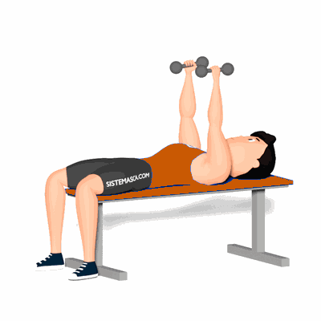

Supino Reto com Halter Pegada Neutra

O exercício trabalha a hipertrofia e fortalecimento da região dos músculos peitorais. Também, por conta do movimento ser realizado com pegada neutra, as articulações do ombro serão menos exigidos, no entanto, terá maior participação dos tríceps no movimento.
Ficha Técnica
Tipo: Musculação
Grupo Muscular: Peito
Aparelho: Nenhum
Músculos: Nenhum
Como realizar
- Pegue dois halteres com pegada neutra e deite sobre uma prancha reta com as costas e os glúteos estabilizado no banco;
- Segure os halteres próximos um ao outro, acima do peito, com os cotovelos estendidos;
- Flexione os cotovelos, desça os pesos ao lado do corpo até próximo à altura do peito;
- Com a força dos músculos peitorais, empurre os pesos para cima retornando à posição inicial;
- Repita os movimentos, conforme o número de repetições pré-definido pelo professor(a).
 RC STORE
RC STORE